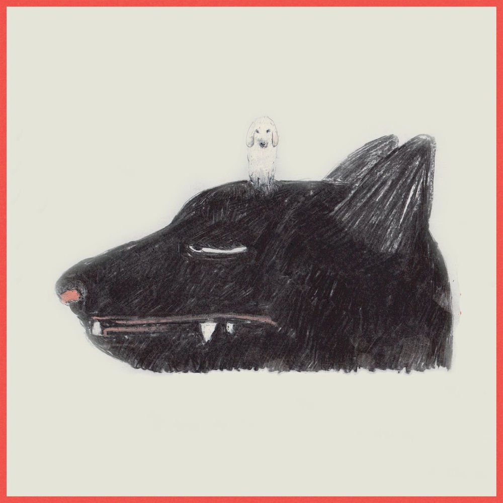
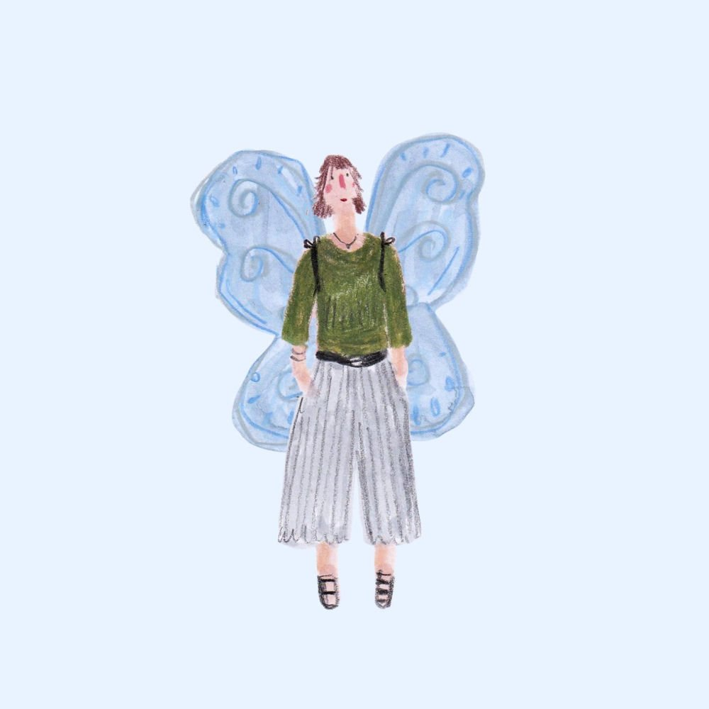
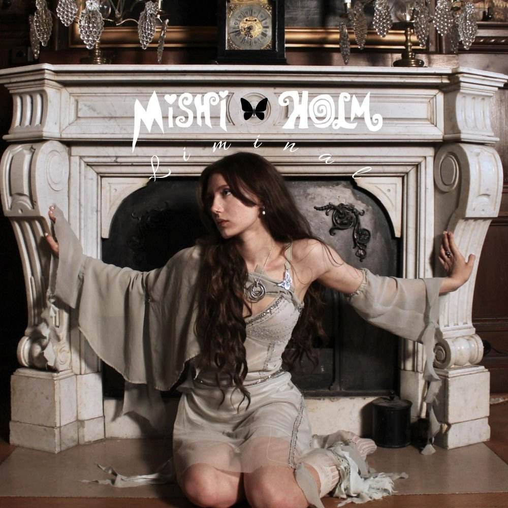

music 🎧
this used to be a small section on my now page, but i wanted more room for it, so now it has a page of its own. every month i write about what i have been listening to.
this is what i listened to in september 2026
this month
i was traveling this month and stumbled upon a record shop selling CDs, cassettes and vinyl, with setups for listening to all of them. i want to have the same thing at home, so i have ordered a wall-mounted shelf, a cassette player and some cassettes from my favorite artist.
summary
songs played
2767 plays
daily average
92 plays
biggest listening day
sep 30th with 226 plays
top artist
The Tallest Man on Earth 96 plays
he is releasing a new album in just a few days, so i have been listening to him a lot again. i found out about him a few years ago, when he played in the cathedral in the city where i live. for the Swedish readers, i recommend listening to his Sommarprat, it was really good!
top album

Tonight's News by Ken Pomeroy, 71 plays
i was about to say that i discovered Ken Pomeroy this month, but apparently that is not true. looking back at my tracking, i have 91 plays of her music in total. most of them are from this month, mainly Sentimental Lady and Bound to Rain, but it turns out i had already played several of her songs once before.
top song
Ambition by Vilma Flood, 60 plays
i found this song in my Release Radar on Spotify. i have not really analyzed the lyrics, but if i had to guess, it is about being vulnerable and loving yourself. it is one of those raw songs that make you feel things, the kind you play loud.
last played

Laura by Jas Ratchford, 16 plays
i first heard this song while playing sudoku, lol (it was in my Release Radar too). i stopped playing just to listen to the lyrics and enjoy the music, and it made me cry. i started thinking about my past, and all the friends i have lost, but also the ones i have gained. very nostalgic, and very emotional. i think i first found her on TikTok and started following her on Spotify, and now she shows up in my Release Radar every now and then.
honorable mentions

Mishi Holm no stats, i have been listening on YouTube
i think about this artist a lot, i even catch myself singing her songs when i am on my own. there is a kind of perfection to them, everything feels thought through and carefully written. i love her lyrics, and i have been obsessing over her music this past month.
May Payne 62 plays
the kind of artist where you enjoy every single song, there is not one i would skip. maybe it is the voice i like so much, but the lyrics hit hard too. underrated, if you ask me.
Emelie Trahan 17 plays
i love the creativity, the nostalgia and the talent. this is my comfort music, and if i could wish for one new album to come out today, it would be from Emelie Trahan. a 2000s aesthetic, but in sound. incredible!
plays per month
- jan3156
- feb1858
- mar2444
- apr1720
- may942
- jun1102
- jul2745
- aug2895
- sep2767